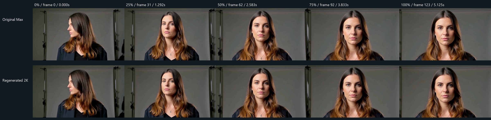
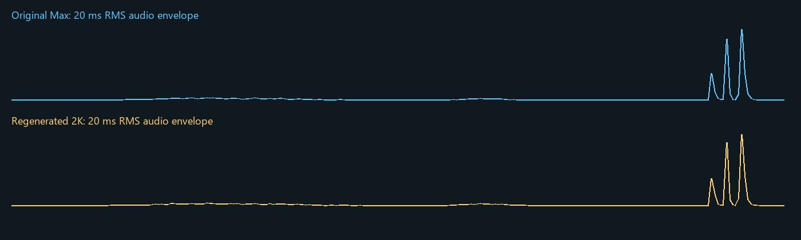

One paid submission. Original 1344×768 / regenerated 2560×1440. Both 124 frames at 24 fps.
Use synchronized playback for the entire clip. Listen to each audio separately. Contact stills do not establish temporal quality.

Same normalized central ROI; different native resolutions. Scroll to inspect at native size.
